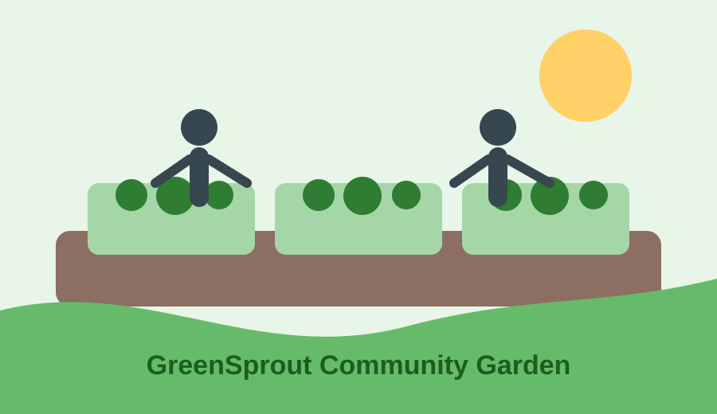

Programs
Explore youth gardening classes, adult workshops, and school partnerships that help residents grow with confidence.
View programsGreenSprout Community Garden connects neighbors through gardening, education, volunteer service, and healthy food access.
Volunteer TodayExplore youth gardening classes, adult workshops, and school partnerships that help residents grow with confidence.
View programsJoin Market Day, Volunteer Saturday, and the Fall Harvest Festival to meet neighbors and support local food access.
See eventsYour support helps sponsor garden beds, tools, seeds, compost, education materials, and family-friendly events.
Contact us
This short multimedia feature introduces the value of community gardening and neighborhood food education.